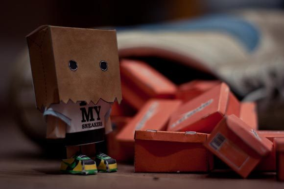

Thu, 31 Mar 2011 03:13:52 · photography · design · toy
some extraordinary inspiration of toy photography

Some extraordinary inspiration of toy photography design by various wicked artists.
Thu, 31 Mar 2011 03:13:52 · photography · design · toy

Some extraordinary inspiration of toy photography design by various wicked artists.